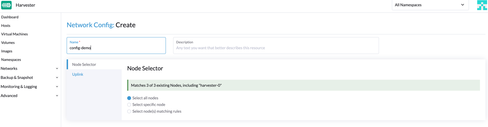
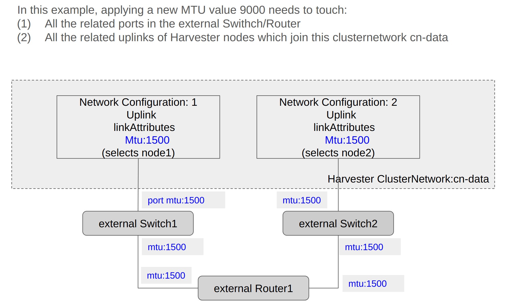
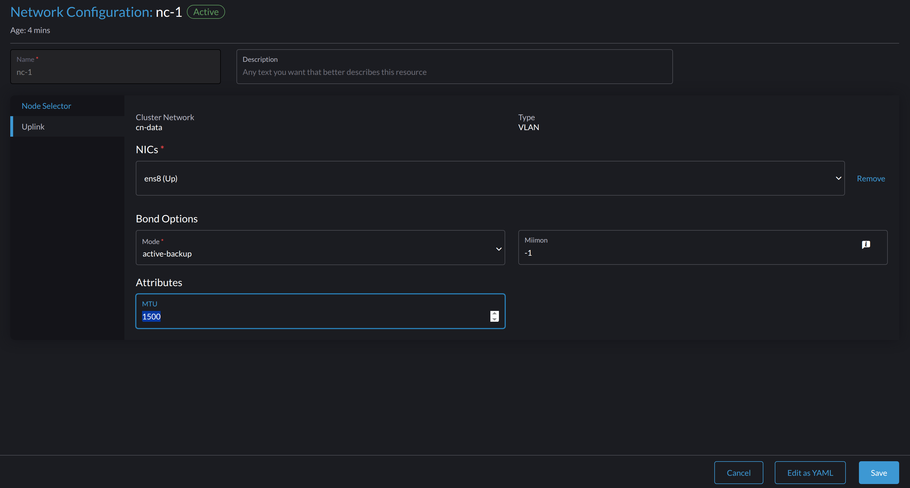

|
本文档采用自动化机器翻译技术翻译。 尽管我们力求提供准确的译文，但不对翻译内容的完整性、准确性或可靠性作出任何保证。 若出现任何内容不一致情况，请以原始 英文 版本为准，且原始英文版本为权威文本。 |
群集网络
概念
群集网络
下图描述了一个典型的网络架构，该架构将数据中心（DC）流量与带外（OOB）流量分开。

我们将SUSE Virtualization上流量隔离转发路径的设备、链接和配置的总和抽象为一个群集网络。
在上述情况下，将有两个群集网络对应于两个流量隔离的转发路径。
网络配置
SUSE Virtualization主机的网络设备规格可以不同。为了与这样的异构群集兼容，我们设计了网络配置。
网络配置仅在特定的群集网络下有效。每个网络配置对应一组具有统一网络规格的主机。因此，对于非统一主机的群集网络，需要多个网络配置。
虚拟机网络
虚拟机网络是虚拟机中的一个接口，用于连接到主机网络。与网络配置一样，除了内置的管理网络外，所有网络必须在群集网络下。
SUSE Virtualization支持向一个虚拟机添加多个网络。如果某些主机上未启用网络的群集网络，则拥有该网络的虚拟机将不会被调度到这些主机上。
有关网络的更多详细信息，请参阅网络部分。
群集网络、网络配置、虚拟机网络之间的关系
下图显示了群集网络、网络配置和虚拟机网络之间的关系。

所有`Network Configs`和`VM Networks`都被归类在一个群集网络下。
-
可以为每个主机分配一个标签，以根据其网络规格对主机进行分类。
-
可以使用节点选择器为每组主机添加网络配置。
例如，在上面的图中，`ClusterNetwork-A`中的主机被分为以下三组：
-
第一组包括主机0，对应于`network-config-A`。
-
第二组包括主机1和主机2，对应于`network-config-B`。
-
第三组包括剩余的主机（主机3、主机4和主机5），它们没有任何相关的网络配置，因此不属于`ClusterNetwork-A`。
群集网络仅在受网络配置覆盖的主机上有效。在特定群集网络下使用`VM network`的虚拟机只能在群集网络处于活动状态的主机上调度。
在上面的图中，我们可以看到：
-
ClusterNetwork-A`在主机0、主机1和主机2上处于活动状态。`VM0`使用`VM-network-A，因此可以在这些主机中任一台上调度。 -
VM1`同时使用`VM-network-B`和`VM-network-C，因此只能在主机2上调度，在那里`ClusterNetwork-A`和`ClusterNetwork-B`都处于活动状态。 -
VM0、`VM1`和`VM2`不能在主机3上运行，因为那里的两个群集网络处于非活动状态。
总体而言，这个图提供了群集网络、网络配置和虚拟机网络之间关系的清晰可视化，以及它们如何影响主机上的虚拟机调度。
群集网络详细信息
群集网络是用于在SUSE Virtualization群集内传输网络流量的流量隔离转发路径。
当部署SUSE Virtualization群集时，会自动创建一个名为`mgmt`的群集网络。您还可以创建自定义群集网络，专门用于虚拟机流量。
内置群集网络
当部署SUSE Virtualization群集时，会自动创建一个名为`mgmt`的群集网络，用于群集内通信。`mgmt`由与每个SUSE Virtualization主机通过管理NIC连接的外部基础设施网络相同的桥接、绑定和NIC组成。由于此设计，`mgmt`还允许从外部基础设施网络访问虚拟机以进行群集管理。
mgmt 不需要网络配置，并始终在所有主机上启用。您无法禁用和删除 mgmt。
|
在 SUSE Virtualization v1.5.x 及更早版本中，整个 VLAN ID 范围（2 到 4094）被分配给 有关更多信息，请参见 问题 #7650。 |
从 v1.6.0 开始，安装期间提供的唯一 主 VLAN ID 会自动添加到 mgmt-br 桥接和 mgmt-bo 接口。安装完成后，您可以 添加辅助 VLAN 接口。
在第一个群集节点的安装过程中，您可以使用install.management_interface设置为`mgmt`配置MTU值。mtu 字段的默认值为 1500，这是 mgmt 通常使用的值。然而，如果您指定的MTU值不是`0`或`1500`，则必须在群集部署后添加相应的注释。
|
添加辅助 VLAN 接口
-
检查
bond-mgmt和bridge-mgmt连接控制文件的当前 VLAN 设置。示例（主 VLAN ID 为 2017）：
$ nmcli -f bridge-port.vlans con show bond-mgmt bridge-port.vlans: 1 pvid untagged, 2017 $ nmcli -f bridge.vlans con show bridge-mgmt bridge.vlans: 2017 -
更新
bond-mgmt和bridge-mgmt连接控制文件以添加辅助 VLAN ID。示例（主 VLAN ID 为 2017，辅助 VLAN ID 为 2018）：
$ nmcli con modify bond-mgmt bridge-port.vlans '1 pvid untagged, 2017, 2018' $ nmcli con modify bridge-mgmt bridge.vlans 2017,2018 -
重启每个节点以应用更改。
在安装后为 mgmt 注释非默认 MTU 值
如果您在 install.management_interface 设置的 mtu 字段中指定了与 0 或 1500 不同的值，则必须将此值注释到 mgmt clusternetwork 对象中。没有注释，所有创建的 VM 网络 使用默认 MTU 值 1500，而不是自动继承您指定的值。
示例
$ kubectl annotate clusternetwork mgmt network.harvesterhci.io/uplink-mtu="9000"
|
您必须确保以下事项：
|
在安装后更改 mgmt 的 MTU 值
-
停止所有附加到
mgmt网络的虚拟机。 -
（可选）如果 存储网络 使用
mgmt并且已启用，则禁用它。 -
更改
bond-mgmt、bridge-mgmt和vlan-mgmt（如果您使用 VLAN）连接控制文件的 MTU 值。示例：
$ nmcli con modify bond-mgmt 802-3-ethernet.mtu 9000 $ nmcli con modify bridge-mgmt 802-3-ethernet.mtu 9000 $ nmcli con modify vlan-mgmt 802-3-ethernet.mtu 9000 $ nmcli device reapply mgmt-bo $ nmcli device reapply mgmt-br -
使用
ip link命令检查 MTU 值。 -
用新的 MTU 值注释
mgmtclusternetwork对象。示例：
$ kubectl annotate clusternetwork mgmt network.harvesterhci.io/uplink-mtu="9000"所有附加到
mgmt的 VM 网络自动继承新的 MTU 值。 -
（可选）启用您在更改 MTU 值之前禁用的 存储网络。
-
启动所有附加到
mgmt的虚拟机。 -
验证虚拟机工作负载是否正常运行。
配置
创建一个新的群集网络
|
为了简化群集维护，为每个节点或节点组创建一个网络配置。没有专用网络配置的情况下，某些维护任务（例如，用不同插槽的NIC替换旧NIC）将要求您在更新网络配置之前停止和/或迁移受影响的虚拟机。 |
-
确保满足 硬件要求。
-
转到 网络 → 群集网络/配置，然后单击 创建。
-
为群集网络指定一个名称。

-
在 群集网络/配置 屏幕上，单击您创建的群集网络的 创建网络配置 按钮。

-
在 网络配置：创建 屏幕上，为配置指定一个名称。
-
在 节点选择器 选项卡上，选择定义此特定网络配置范围的方法。

-
方法 Select all nodes 仅在所有节点为此特定自定义群集网络使用完全相同的NIC时有效。在其他情况下（例如，当群集有一个 见证节点 时），您必须选择剩余方法中的任意一个。
-
如果您希望配置适用于未被所选方法覆盖的节点，则必须创建另一个网络配置。
-
-
在 上行链路 选项卡上，配置以下设置：
-
NICs：该列表包含所有选定节点共有的NIC。无法选择的NIC在一个或多个节点上不可用，必须进行配置。故障排除完成后，刷新屏幕并验证NIC是否可以被选择。
-
绑定选项：默认绑定模式为`active-backup`。
-
属性：您必须在自定义群集网络的所有网络配置中使用相同的MTU。如果您未指定MTU，则使用默认值`1500`。如果SUSE Virtualization webhook的MTU与现有网络配置的MTU不匹配，则会拒绝新的网络配置。

连接到绑定接口的物理交换机必须配置为干线端口。这些端口必须接受标记流量，并发送带有虚拟机网络使用的VLAN ID的标记流量。
-
-
单击*保存*。
更改网络配置
对现有网络配置的更改可能会影响SUSE Virtualization虚拟机和工作负载，以及交换机和路由器等外部设备。有关更多信息，请参见网络拓扑。
|
在更改网络配置之前，您必须停止所有受影响的虚拟机。 |
以下部分概述了您必须执行的步骤，以更改网络配置的MTU。这些部分中使用的示例群集网络具有`cn-data`，其MTU值为`1500`，并计划更改为`9000`。

一般更改
-
定位目标群集网络和网络配置。
在以下示例中，群集网络为
cn-data，网络配置为nc-1。
-
选择 ⋮ → 编辑配置，然后更改相关字段。
-
节点选择器 选项卡：

-
上行链路 选项卡：

在自定义群集网络的所有网络配置中，绑定选项 和 属性 字段必须使用相同的值。
-
-
单击*保存*。
更改没有附加存储网络的网络配置的MTU
在这种情况下，存储网络设置 既未启用也未附加到目标集群网络。
|
如果必须更改 MTU，请执行以下步骤：
-
停止所有附加到目标集群网络的虚拟机。
-
检查目标集群网络的网络配置。
如果存在多个网络配置，请记录每个节点选择器，并删除配置，直到只剩下一个。
-
您还必须更改对等外部交换机或路由器上的MTU。
-
使用Linux `ip link`命令验证MTU是否已更改。
如果网络配置选择了多个 SUSE Virtualization 节点，请在每个节点上运行该命令。
输出必须显示相关
*-br设备的新MTU和状态UP。在以下示例中，设备是cn-data-br，新MTU是9000。Harvester node $ ip link show dev cn-data-br |new MTU| |state UP| 3: cn-data-br: <BROADCAST,MULTICAST,UP,LOWER_UP> mtu 9000 qdisc noqueue state UP mode DEFAULT group default qlen 1000 link/ether 52:54:00:6e:5c:2a brd ff:ff:ff:ff:ff:ff当状态为
UNKNOWN时，SUSE Virtualization 和外部交换机或路由器上的MTU值可能不匹配。 -
使用诸如
ping的命令在 SUSE Virtualization 节点上测试新MTU。您必须将消息发送到具有新MTU的 SUSE Virtualization 节点或具有外部IP的节点。
在以下示例中，网络是
cn-data，CIDR是192.168.100.0/24，网关是192.168.100.1。-
在桥接设备上设置IP
192.168.100.100。$ ip addr add dev cn-data-br 192.168.100.100/24 -
通过网关为目标IP（例如，
8.8.8.8）添加路由。$ ip route add 8.8.8.8 via 192.168.100.1 dev cn-data-br -
从新IP
192.168.100.100对目标IP进行ping测试。$ ping 8.8.8.8 -I 192.168.100.100 PING 8.8.8.8 (8.8.8.8) from 192.168.100.100 : 56(84) bytes of data. 64 bytes from 8.8.8.8: icmp_seq=1 ttl=59 time=8.52 ms 64 bytes from 8.8.8.8: icmp_seq=2 ttl=59 time=8.90 ms ... -
使用不同的包大小ping目标IP以验证新MTU。
$ ping 8.8.8.8 -s 8800 -I 192.168.100.100 PING 8.8.8.8 (8.8.8.8) from 192.168.100.100 : 8800(8828) bytes of data The param `-s` specify the ping packet size, which can test if the new MTU really works -
去除您用于测试的路由。
$ ip route delete 8.8.8.8 via 192.168.100.1 dev cn-data-br -
去除您用于测试的IP。
$ ip addr delete 192.168.100.100/24 dev cn-data-br
-
-
恢复您删除的网络配置。
您必须在每个网络配置中更改MTU，并验证新MTU是否已应用。如果 SUSE Virtualization webhook 的MTU与现有网络配置的MTU不匹配，则会拒绝新的网络配置。
所有连接到目标群集网络的虚拟机网络会自动继承新的MTU值。
在以下示例中，网络名称为`vm100`。运行命令`kubectl get NetworkAttachmentDefinition.k8s.cni.cncf.io vm100 -oyaml`以验证MTU值是否已更新：
+
apiVersion: k8s.cni.cncf.io/v1
kind: NetworkAttachmentDefinition
metadata:
annotations:
network.harvesterhci.io/route: '{"mode":"auto","serverIPAddr":"","cidr":"","gateway":""}'
creationTimestamp: '2025-04-25T10:21:01Z'
finalizers:
- wrangler.cattle.io/harvester-network-nad-controller
- wrangler.cattle.io/harvester-network-manager-nad-controller
generation: 1
labels:
network.harvesterhci.io/clusternetwork: cn-data
network.harvesterhci.io/ready: 'true'
network.harvesterhci.io/type: L2VlanNetwork
network.harvesterhci.io/vlan-id: '100'
name: vm100
namespace: default
resourceVersion: '1525839'
uid: 8dacf415-ce90-414a-a11b-48f041d46b42
spec:
config: >-
{"cniVersion":"0.3.1","name":"vm100","type":"bridge","bridge":"cn-data-br","promiscMode":true,"vlan":100,"ipam":{},"mtu":9000} // MTU has been updated-
启动所有连接到目标群集网络的虚拟机。
虚拟机应该已经继承了新的MTU。您可以在客户操作系统中使用命令`ip link`和`ping 8.8.8.8 -s 8800`进行验证。
-
验证虚拟机工作负载是否正常运行。
|
SUSE Virtualization不对更改MTU值时可能发生的任何损坏或数据丢失负责。 |
更改附加存储网络的网络配置的MTU。
在此场景中，存储网络设置已启用并连接到目标群集网络。
存储网络由`driver.longhorn.io`使用，这是SUSE Virtualization的默认CSI驱动程序。SUSE Storage负责配置根卷，因此更改MTU会影响所有虚拟机。
|
如果必须更改 MTU，请执行以下步骤：
-
停止所有虚拟机。
-
禁用存储网络设置。
允许一些时间来禁用该设置，然后验证更改是否已应用。
-
检查目标集群网络的网络配置。
如果存在多个网络配置，请记录每个节点选择器，并删除配置，直到只剩下一个。
-
您还必须更改对等外部交换机或路由器上的MTU。
-
使用`ip link`命令验证MTU是否已更改。
如果网络配置选择了多个 SUSE Virtualization 节点，请在每个节点上运行该命令。
输出必须显示相关
*-br设备的新 MTU 和状态UP。在以下示例中，设备是cn-data-br，新 MTU 是9000。Harvester node $ ip link show dev cn-data-br |new MTU| |state UP| 3: cn-data-br: <BROADCAST,MULTICAST,UP,LOWER_UP> mtu 9000 qdisc noqueue state UP mode DEFAULT group default qlen 1000 link/ether 52:54:00:6e:5c:2a brd ff:ff:ff:ff:ff:ff当状态为
UNKNOWN时，SUSE Virtualization 和外部交换机或路由器上的 MTU 值可能不匹配。 -
使用诸如 SUSE Virtualization 的命令在
ping节点上测试新 MTU。您必须将消息发送到具有新 MTU 的 SUSE Virtualization 节点或具有外部 IP 的节点。
在以下示例中，网络是
cn-data，CIDR 是192.168.100.0/24，网关是192.168.100.1。-
在桥接设备上设置 IP
192.168.100.100。$ ip addr add dev cn-data-br 192.168.100.100/24 -
通过网关为目标 IP（例如，
8.8.8.8）添加路由。$ ip route add 8.8.8.8 via 192.168.100.1 dev cn-data-br -
从新 IP
192.168.100.100ping 目标 IP。$ ping 8.8.8.8 -I 192.168.100.100 PING 8.8.8.8 (8.8.8.8) from 192.168.100.100 : 56(84) bytes of data. 64 bytes from 8.8.8.8: icmp_seq=1 ttl=59 time=8.52 ms 64 bytes from 8.8.8.8: icmp_seq=2 ttl=59 time=8.90 ms ... -
使用不同的包大小 ping 目标 IP 以验证新 MTU。
$ ping 8.8.8.8 -s 8800 -I 192.168.100.100 PING 8.8.8.8 (8.8.8.8) from 192.168.100.100 : 8800(8828) bytes of data The param `-s` specify the ping packet size, which can test if the new MTU really works -
删除您用于测试的路由。
$ ip route delete 8.8.8.8 via 192.168.100.1 dev cn-data-br -
删除您用于测试的 IP。
$ ip addr delete 192.168.100.100/24 dev cn-data-br
-
-
恢复您删除的网络配置。
您必须在每个网络配置中更改 MTU，并验证新 MTU 是否已应用。如果 SUSE Virtualization webhook 的 MTU 与现有网络配置的 MTU 不匹配，则会拒绝新的网络配置。
-
允许一些时间来启用该设置，然后验证更改是否已应用。`storagenetwork`以新的MTU值运行。
所有连接到目标集群网络的虚拟机网络会自动继承新的MTU值。
+
在以下示例中，网络名称为 vm100。运行命令 kubectl get NetworkAttachmentDefinition.k8s.cni.cncf.io vm100 -oyaml 以验证 MTU 值是否已更新。
+
apiVersion: k8s.cni.cncf.io/v1
kind:网络附件定义 +
元数据： +
注解： +
network.harvesterhci.io/route: '{"mode":"auto","serverIPAddr":"","cidr":"","gateway":""}' +
创建时间戳：'2025-04-25T10:21:01Z' +
终结器： +
- wrangler.cattle.io/harvester-network-nad-controller +
- wrangler.cattle.io/harvester-network-manager-nad-controller +
代：1 +
标签： +
network.harvesterhci.io/clusternetwork: cn-data +
network.harvesterhci.io/ready: 'true' +
network.harvesterhci.io/type:L2VlanNetwork
network.harvesterhci.io/vlan-id:'100' +
名称： vm100 +
名称空间： default +
资源版本：'1525839' +
uid:8dacf415-ce90-414a-a11b-48f041d46b42 +
规格： +
配置： >- +
{"cniVersion":"0.3.1","name":"vm100","type":"bridge","bridge":"cn-data-br","promiscMode":true,"vlan":100,"ipam":{},"mtu":9000} // MTU 已更新
-
启动所有连接到目标集群网络的虚拟机。
虚拟机应该已经继承了新的MTU。您可以在来宾操作系统中使用 Linux
ip link命令和ping 8.8.8.8 -s 8800命令来验证此信息。 -
验证虚拟机工作负载是否正常运行。
|
SUSE Virtualization不对更改MTU值时可能发生的任何损坏或数据丢失负责。 |